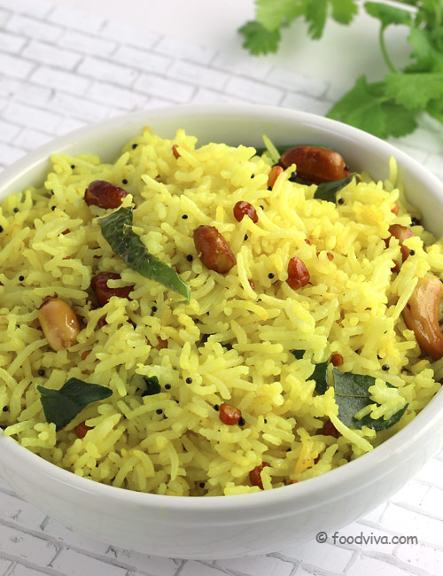

Lemon Rice (Chitranna)

This famous South Indian rice dish, chitranna rice is made by tempering cooked rice with traditional ingredients like mustard, dals and peanuts, perking it up with onions and coconut, and flavouring it with lemon juice. The crunch of peanuts, the flakiness of coconut and the tang of lemon juice ensure a good balance of texture and taste in Karnataka chitranna rice. You will surely enjoy this easy and convenient recipe.
Chitranna rice is a very popular South Indian recipe, which is considered very auspicious and made on festival days as an offering to God. People don't mind standing in long queues to get their share of Karnataka chitranna rice prasad at temples.
Ingredients
- Rice is, of course, one of the most important components of the dish. My first preference is ultra-long grain basmati — its characteristic features: fragrance and fluffy grains — are ideal. However, I’ve also had great success with sona masoori rice.
- Oil is needed for tempering the lentils, nuts, and spices. Traditionally, you’ll want to use gingelly oil (raw sesame oil).
- Black mustard seeds are spicy, hot, and peppery. Don’t substitute for white mustard.
- Chana dal is an essential part of South Indian tadka (tempering). It’s nutty and earthy, but also adds delicious crisp pieces to the recipe!
- Split urad dal provides explosions of mild, creamy, and nutty flavor in every bite.
- Curry leaves build on the citrusy flavors. Use fresh.
- Lemon
- Green chilis
- Turmeric powder in moderation gives a beautiful golden color and earthy, peppery nuance.
- Salt is a must. Season your food, always!
- Fresh coriander (cilantro, for U.S. readers) is the perfect finishing touch, with citrusy overtones
Steps
- Wash the rice and then put it to cook.
- Temper the lentils, curry leaves, nuts, green chilis, and turmeric in oil.
- Pour the tempering over the rice.
- Add lemon juice, salt, and freshly chopped coriander to the rice. Mix well.